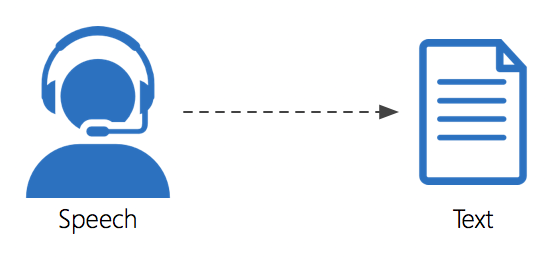

## Nu am Înțeles ! #### Transcriere audio (*) pentru limba română _(*) Adică Speech-to-Text pentru limba Română :)_
## Transcrierea audio <div>  </div> Este procesul de transformare a vorbirii în text -- cu ajutorul inteligenței artificiale.
## Aplicații ale transcrierii audio * Transcriere de emisiuni radio / tv / podcast pentru indexare / SEO * Comenzi vocale - automatizare casă și dispozitive - cumpărături online vocale - ajutor pentru persoanele cu dizabilități * Robot (telefonic) pentru interacțiune cu oameni (clienți) <aside class="notes"> Transcrierea discursurilor parlamentare pentru a îi responzabiliza. </aside>
## Soluții existente * Amazon Alexa * Google Text to Speach * Apple Siri * Microsoft Cortana * .. altele
## Probleme alre soluțiilor existente * Nu funcționează pentru limba română. * Sunt soluții proprietare (IP al altora)
## Situație existentă - Română * Nu am găsit modele antrenate pentru limba română (*) * Am găsit seturi de date mici / insuficiente pentru antrenament * Calitatea slabă a datelor găsite
## Obiectivele proiectului * Să facem un motor de transcriere audio funcțional pentru limba română * Să pornim procesul de culegere de date ( la Mozilla Common Voice ) * Să avem un proces reproductibil (documentație, imagini docker)
## Soluții / tehnologii * Deep Speech 2 model from Baidu - (implementare pytorch ) * nvidia-docker2 on a Geforce 1080Ti 11GB RAM pentru antrenare * Set de date propriu - cules la hackathon * React, python, bash - web application
## Provocări întâmpinate * Lipsa datelor de antrenare penru limba română * Timpi mari de antrenare ( Feedb-back încet ) * Hardware specializat pentru antrenare * Lucru cu echipă nouă
## Livrabile * Model de transcriere pt. Română antrenat pentru vocabular redus * 5400+ texte pentru Common Voice - putem începe procesul online !! * Aplicație pentru procesul culegere de date audio * Proces simplu și ușor de reprodus pentru antrenare
## Performanță model #### Mărime date * 1600 fișiere audio * 10 cifre + 6 fraze simple
## Performanță model #### Pe lotul de validare * Average Word Error Rate (WER): 2.68% * Average Character Error Rate (CER): 1.54% #### Pe lotul de test * Average Word Error Rate (WER): 7.33% * Average Character Error Rate (CER): 5.26%
## Mai departe Vrem să: * Să construim un model generic bun pentru transcriere audio * Să construim o comnitate și produse în jurul tehnologiei * Folosirea unui language model (corectare texte) <aside class="notes"> Avem nevoie de date de antrenament. Mozilla Common Voice ar fi o soluție. </aside>
## Set de date LIBER * Avem nevoie de date pentru aplicații * Vrem să contribuim la Mozilla Common Voice * Eugen: Mi-am propus să promovez proiectul de culegere de date <aside class="notes"> Avem nevoie de date de antrenament. Mozilla Common Voice ar fi o soluție. </aside>
## Echipa Codul, prezentarea și resursele: https://github.com/cnstlungu/nuaminteles
## Echipa * Adrian * Andrei Nistor <a href="mailto:coder.tux@gmail.com">coder.tux@gmail.com</a> * Costin Lungu <a href="mailto:lunguconstantin@gmail.com">lunguconstantin@gmail.com</a> * Eugen Stan <a href="mailto:eu@ieugen.ro">eu@ieugen.ro</a> * Florin Alexandrescu <a href="mailto:mihai.florin.alexandrescu@gmail.com">mihai.florin.alexandrescu@gmail.com</a> * Ștefan Cârcimuaru <a href="mailto:carcstef95@gmail.com">carcstef95@gmail.com</a>
## Q & A Întrebări ?!
2NHack 2018